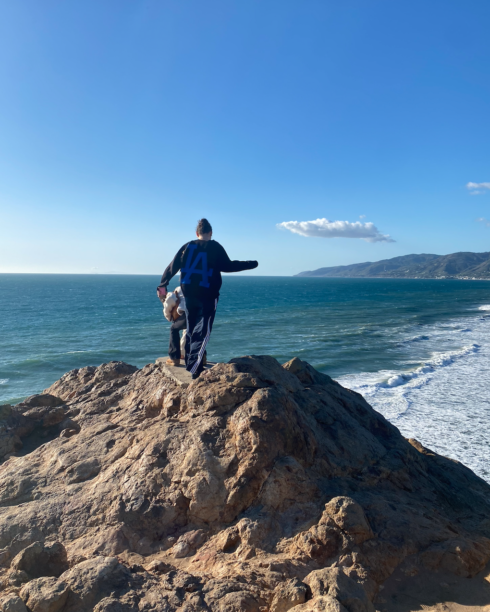

If there's one place I would have to spend the rest of my life, it would be at my home in West Los Angeles. There are so many things to love about the city, from the food, to the weather, to the beaches, to the palm trees, the vibes of sunny Los Angeles will forever be unmatched in my eyes. I know lots of people have gripes with the traffic, or with the celeberties, or even with the bustling entertainment industry. Although these can be seen as negative things, I just think it makes the city that much more authentic and unique. There are so many different amazing areas to explore, and it's a perfect balance of city life mixed with stunning nature. There are numerous amazing hikes, beaches, cliffs, and even mountains to explore. No one can ever say they're bored in such a city. Some of my favorite destinatitons in LA are: my house (of course), In n Out Burger, the Palisades Village, Zuma Beach, and the Malibu Country Mart. The diversity, talent, determination, and individuality that the residents of Los Angeles exhibit is why I think the city is one of the most special in the world.
